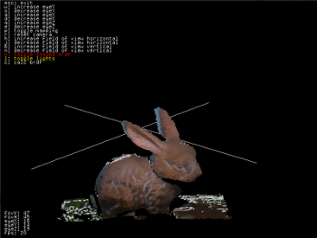
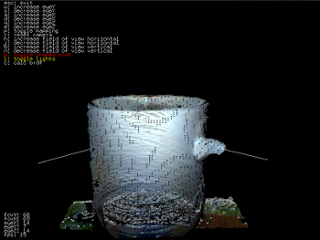
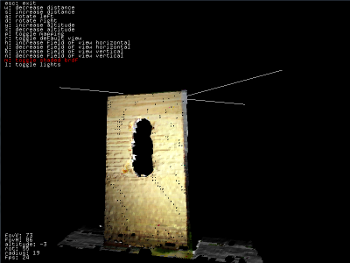
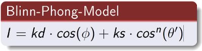

BRDF Estimation on Objects
BRDF Estimation on Objects

Results & Evaluation
In this section we present the results of our BRDF scanner. We tested the quality of the BRDF estimation by rendering the scanned mesh with the estimated values. For that we had three different materials, that we estimated for the Blinn-Phong model as shown in the following table.
| material | kdiffuse | kspecular | n-hardness | |
|---|---|---|---|---|
|  | clay | 0.91 | 0.82 | 3.09 |
|  | porcelain | 2.49 | 1.16 | 2.30 |
|  | timber | 2.91 | 1.67 | 3.71 |
As a reminder, the coefficients in the table above relate to the BRDF in the following way.

The materials tested were estimated quite well in most regions of the mesh. We saw that clay was very soft compared to the hard and shiny porcelain. A light point was visible on the surface of the porcelain cup, when close at the object, where this was not the case for the clay bunny, and a lot less visible on the timber. In regions where the angles between incident light and surface normal were very large we saw unrealistic discolorations. The porcelain cup showed the influence of the nature of the LED light, which is slightly blue. So the cup actually shows a little blue, although it is a purely white surface. The other objects surfaces seem not to get influences much by the color of the LEDs though. This shows a small flaw of our BRDF Scanner, since the light sources should be a pure white. This however is not realisable with LEDs.
To get a good feel for the material in the rendered version it is crucial to move the light source around in order to best appreciate the effects of different angles. Therefore we made the following video showing the rendered version of an BRDF estimation of the timber.
Comparison of Lighting Models
We also tried different lighting models, as mentioned in the introduction. The Blinn-Phong model gave us a lot more realistic looking results than the Phong model. However, best results were achieved by using the Blinn-Phong model with theta-dash as angle instead of φ. Which we found out by mistake. The following figures demonstrate our findings.
Diffuse: 1.97, Specular: 1.14, Hardness: 2.91
Diffuse: 2.91, Specular: 1.67, Hardness: 3.71
Diffuse: 0.42, Specular: 5.49, Hardness: 8.84
Problems & Limitations
Unfortunately, the equation solver we chose was not able to handle boundary constrains, therefore it is possible, and in fact happened sometimes
that the estimated values for the coefficients were too large. This results in unrealistic colors, wrong hardness, diffuse or specular light. However,
it seems like the relation between those three coefficients stay more or less the same. Apart from issues with the boundary constraints, it is sometimes
the case that the solver may not find the correct or even any solution at all. Mostly this is the case if the initial guess of the parameters
was unfavorable. However, even when over 99% of the pixels on the mesh could be estimated, it still happenned that the rest could not. This results
in black pixels on the mesh. As they can be seen in the video and the images.
Another limitation is the combination of "specular" materials and our laser scanner. The photographs would yield valuable data about their
reflection bevahiour but when trying to get a mesh from the object, the laser is reflected and shows up on other surfaces on the object
or near the scene, distracting the algorithm that tries to follow a single red line but finds something completely different. The height of
the laser line also sets a limit for the scan resolution and thus detailedness of the model.
Related Works
BRDF calculation is done with a considerable amount of complexity and accuracy. But considering further phenomena like subsurface scattering or increasing accuracy in resolution or wavelength of the light source can improve the resulting reflectance distribution function to yield almost photo-realistic rendered images.
We found the work Messung der spektralen
Reflexionsfunktion (BRDF) ausgewählter Oberflächen bei natürlicher Beleuchtung
from Gerhard Meister at Universität Hamburg in which he describes measuring BRD functions of
artificial materials usually found outside. He did measurements with a spectrometer working with
61 spectrals bands resulting in an amazing accuracy concerning the wavelength of incident light.
The work Experimental Analysis of BRDF Models
from Ngan, Durand and Matusik is also concerned with getting BRDFs with high quality equipment. They mention values
for several reflection models for a lot of artificial materials.
Unfortunately, we were unable to find works that also mention reflection values for the materials of our chosen objects.
A reason for that could be that our materials wood and clay don't have constant properties in different samples,
even in different areas of one sample, as natural materials heavily depend on composition materials available
and external factors during creation. Thus, it is difficult to specify any uniform value at all for them.
Another reason why the coefficients may appear very high is that the BRDF also contains the texture in each point of the mesh. Estimating just the BRDF for the whole mesh and save the texture separately would result in different coefficients.
Improvement Suggestions
To compensate the triangles on the mesh that could not be estimated correctly, it might be reasonable to smooth over the neighbours for those points to get an estimate. Since it is reasonable to assume that the material won't change from one triangle to its neighbour. However, it should not be that the whole mesh gets assigned a singular BRDF, since material may vary over a larger area on the mesh or between objects within a scene. Having mentioned that, a low pass filtering process, depending on the local neighbourhood may be good in general for this application, since errors may occur from the equation solver and the image capturing process. Those errors would be suppressed by such a filter. Of course, choosing higher-quality equipment will further improve the resulting data. Digital cameras are available with stunning pixel resolutions and image quality. To improve the spectral resolution, a spectrometer will yield very precise data but is probably inappropriate for scanning entire objects but rather specimens of them.